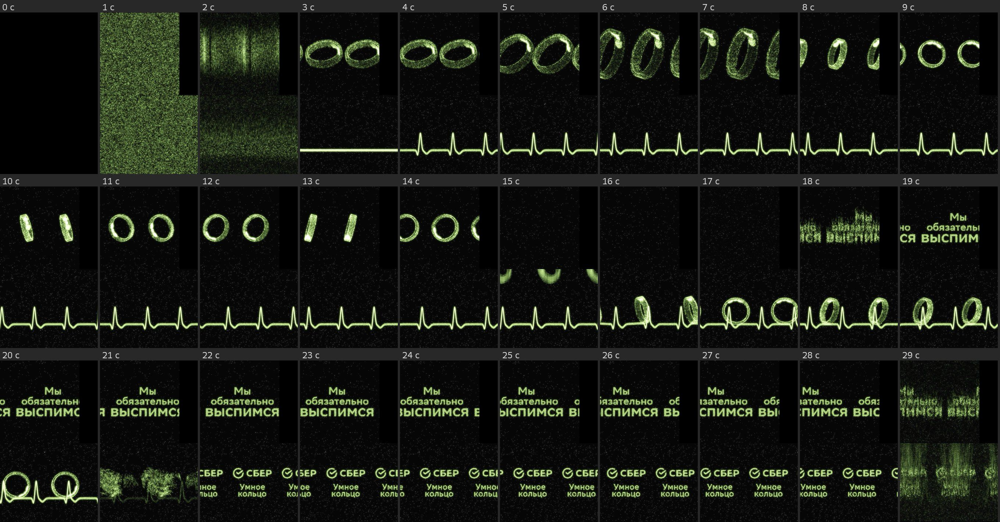
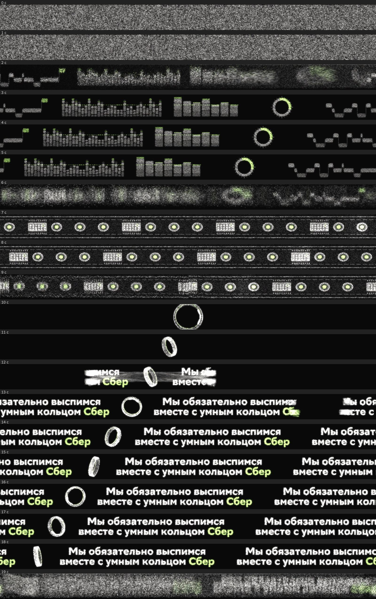

Умное кольцо · Башня Останкино и крыша «Лужники»
По сценарию Лео 26.11 и правкам 27.11. Видео закольцованы, без звука.
Башня Останкино · 30 с
Файл 532×880 (верх 432×450, низ 532×430), 25 к/с, края стыкуются. Зелёный на чёрном, белые точки фона, вход из чёрного и уход в чёрный на концах. Шум → кольцо и график → график с 3 с → облёт кольца 1–7 с → малое кольцо 7–14 с → 14 с падение на график, пружина → 18 с «Мы обязательно выспимся» крупно → 20 с «СБЕР Умное кольцо» → 29 с шум.
Лист кадров (каждую секунду)

Крыша «Лужники» · 20 с
2416×162, 25 к/с, до 10 Мбит/с, края стыкуются, лента едет справа налево, один оборот за 20 с. Графики сна из приложения → внутренняя сторона кольца → кольцо в высоту экрана → из-за кольца выезжает «Мы обязательно выспимся вместе с умным кольцом Сбер».
Лист кадров (каждую секунду)
